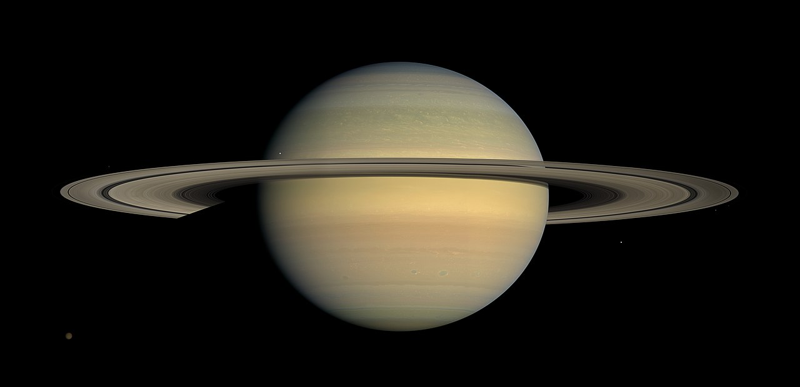

Saturn is the sixth planet from the Sun and the second-largest in the Solar System, after Jupiter. It is a gas giant with an average radius of about nine times that of Earth. It only has one-eighth the average density of Earth; however, with its larger volume, Saturn is over 95 times more massive. Saturn is named after the Roman god of wealth and agriculture; its astronomical symbol (♄) represents the god's sickle. The Romans named the seventh day of the week Saturday, Sāturni diēs ("Saturn's Day") no later than the 2nd century for the planet Saturn.
